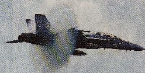

Free talk 雑談。
（258）音速のカベ
ジェット機が音速を超える瞬間、ソニックブームと呼ばれる大音響が発生する。それと同時に機体前方に白い円盤が発生することがある。
しばらく前、トレビアの泉というテレビ番組で、その瞬間を写したビデオを放送していた。まるでタイムマシン映画に出てくる未来への入り口みたい。戦闘機は、その円盤を突き抜けてゆく。
そしたら先日の地元新聞に、その瞬間の写真が掲載されていた。あらめてフーンと思ったので、コピペしちゃった。

白い煙のように見えるのは水蒸気。速度が音速を超えると、機体の周囲に生じる。写真はアメリカ軍の戦闘機が、音速を超えた瞬間＝AP（8/8（月）、中日新聞夕刊・海外社会面）